眨眼3 <<
Previous Next >> W5
製作SSH
首先將小黑編輯器打開並寫打上：
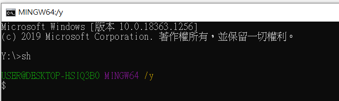
打上
ssh-keygen -t rsa -b 4096 -C“使用者學號”
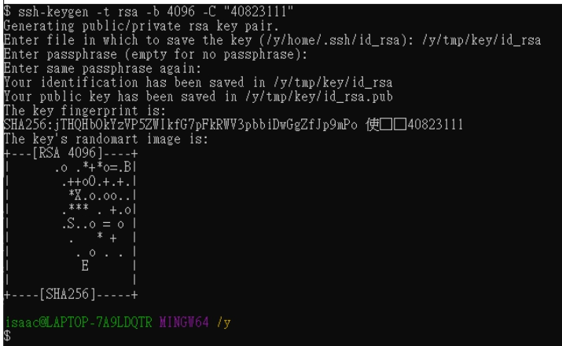
第二行為按鍵使儲存位置
下一行為輸入密碼
再次輸入密碼
即可獲得要鑰使
在鑰使儲存位置會找到兩個檔案（上為私有密鑰下為公共密鑰）

（3）
下載putty工具
會有以下檔案

利用puttygen.exe
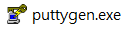
：後會發現下圖視窗
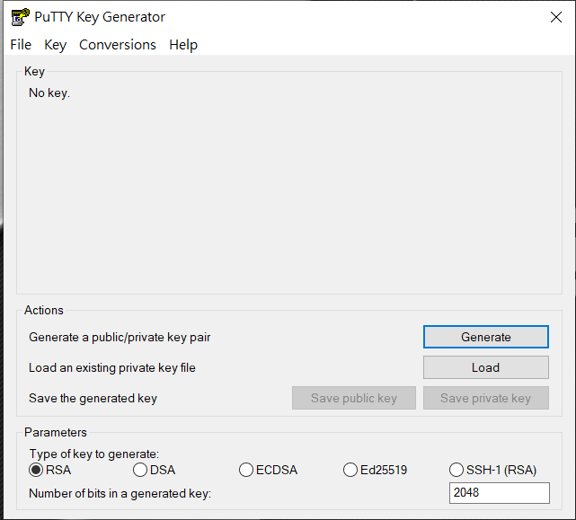
點擊負荷
將剛才的鑰使開啟
將id_rsa轉為Putty可以解讀的.ppk格式
選擇所使用的按鍵使
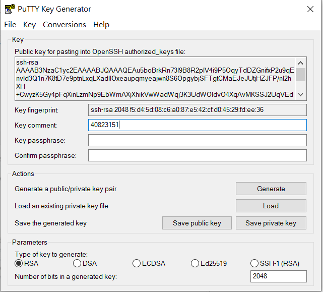
得下圖
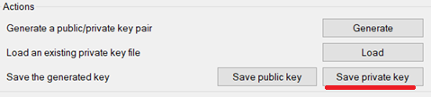
以私人的形式儲存關鍵字使
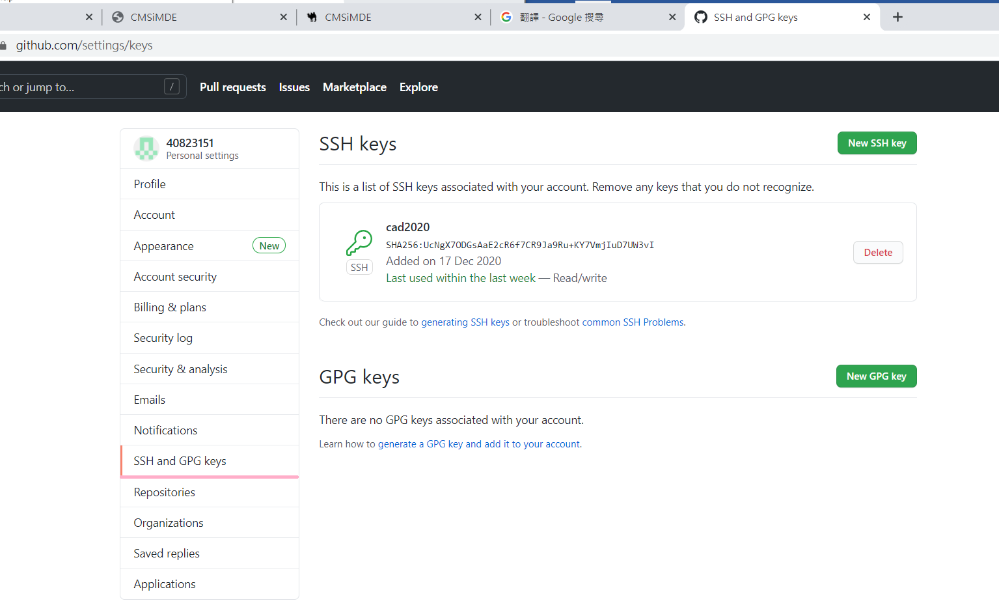
（4）
在github的settings中找到SSH和GPD密鑰
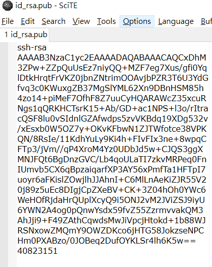
新增按鍵使
將id_rsa.pub的內容

複製到
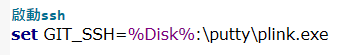
並且創造一把鑰匙使
（5）
修改啟動的start.bat加入以下設置
設置GIT_SSH =％Disk％：\ putty \ plink.exe

（6）
home下一個.ssh目錄中多添加config和內容如下
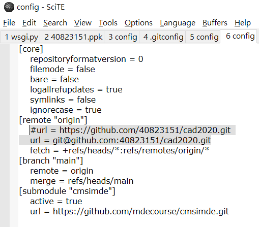
＃在家中沒有代理
#ProxyCommand y：/PortableGit/mingw64/bin/connect.exe -H proxy.mde.nfu.edu.tw:3128％h％p
＃在膩子github.com會話設置下使用auth設置git_ssh = y：/putty/plink.exe
ProxyCommand y：/putty/plink.exe github.com％h％p
託管github.com
用戶git
港口22
主機名github.com
＃用於connect.exe需要openssh密鑰格式
#IdentityFile“ y：\ home \ .ssh \ id_rsa_mdecourse”
＃for plink.exe需要rsa密鑰格式，但在putty github.com會話下設置
＃plink.exe不需要以下設置
#IdentityFile“ y：\ home \ .ssh \ mdecourse_putty_private.ppk”
TCPKeepAlive是
身份只有
（7）
cad2020倉儲中.git目錄下的config檔案中的連線協定，由https轉換採ssh連線
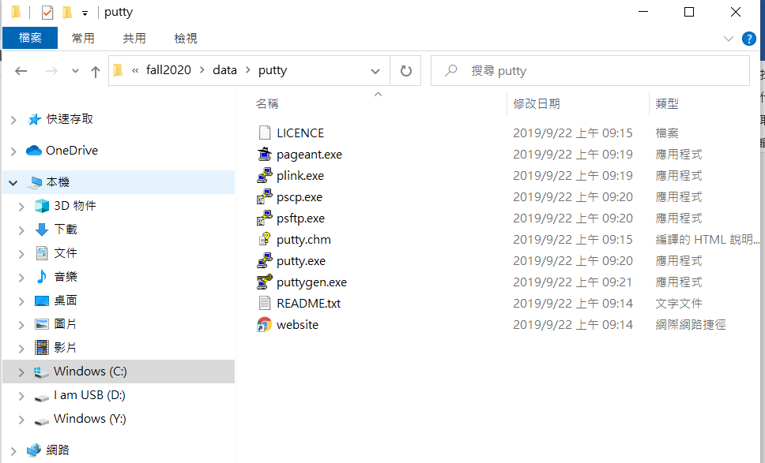
（8）
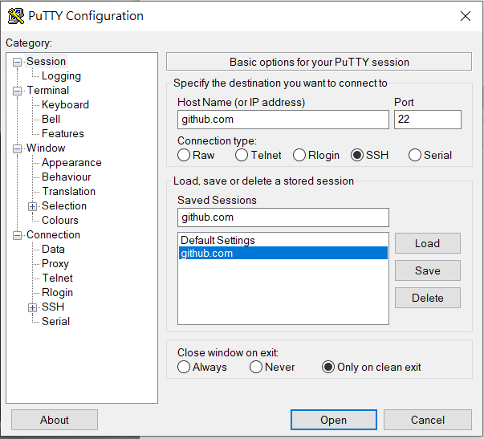
點擊putty.exe
設定代理主機
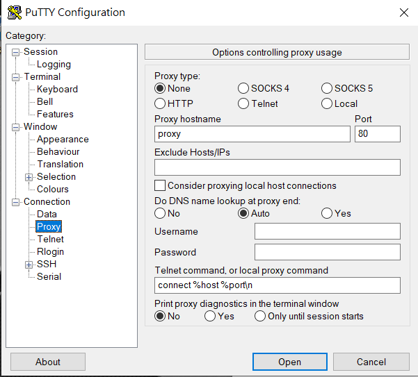
建一個github.com和保存
點擊代理並設置
設定代理主機（Proxy）（除非是IPV4 IPV6才要設定）
設定Auth
設定SSH的ppk私鑰（之前轉的APK）
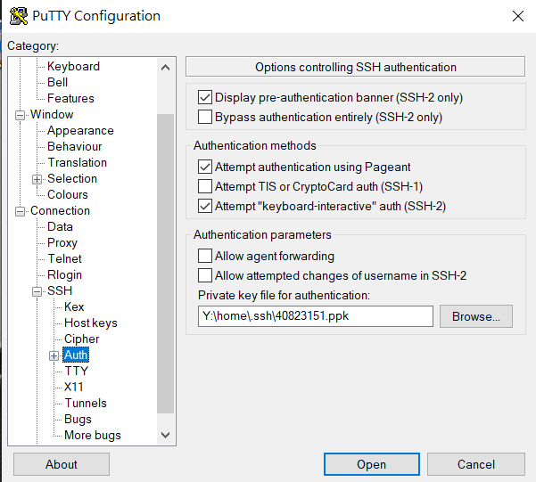
並且點擊open後，就可以透過近端的.ppk私鑰與Github.com上的公鑰對應，無需輸入帳號密碼就可以進行git push
眨眼3 <<
Previous Next >> W5